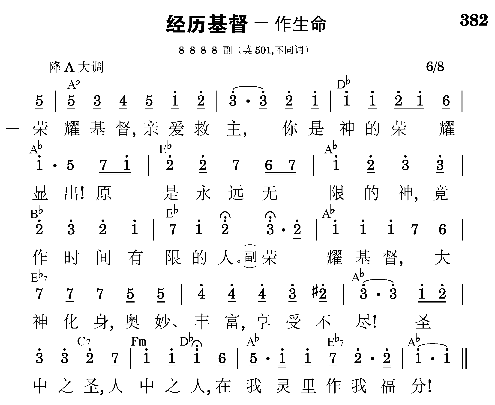

总题：话语的职事与为着神的经纶之神的分赐

2
神的丰盛藏你里面，
神的荣耀从你彰显；
前在肉身成功救赎，
今成那灵与我联属。
3
凡父所有全由你承，
凡你所是都归于灵；
灵进我灵作你实际，
使你成为我的经历。
4
灵今借你生命活话，
在我里面将你实化；
接受这话，接触这灵，
你就作了我的供应。
5
灵里敬拜，灵里瞻仰，
如镜返照你的荣光，
我就变成你的形状，
使你从我得着显彰。
6
惟有如此才能成圣，
必须如此才能得胜；
舍此无法摸着生命，
舍此无路可以属灵。
7
借此你灵浸透全人，
到处是你，到处是神！
我就脱离天然自我，
与众圣徒作神居所。